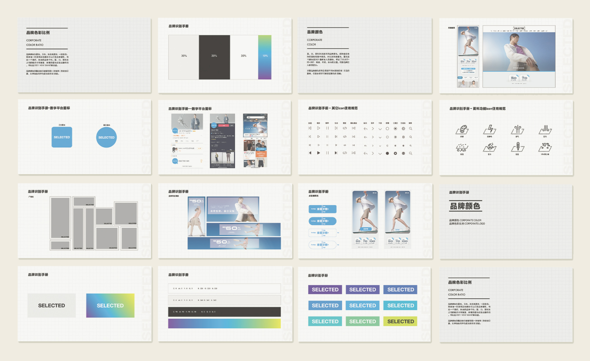
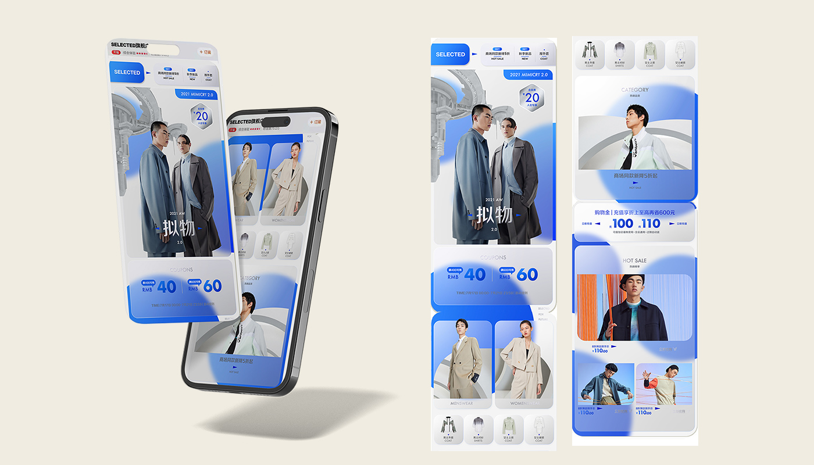
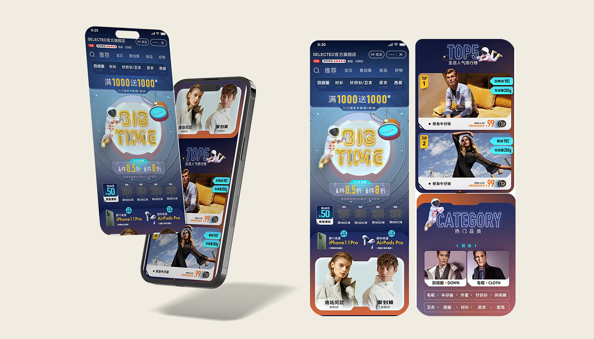

Turning a fashion identity into a clearer, more scalable digital system.
ClientSELECTED
RoleSenior Digital Designer
ScopeVIS upgrade, logo refinement, design guidelines, e-commerce, campaign & digital templates


In 2020, responsibility for SELECTED’s visual identity upgrade shifted from offline marketing to the e-commerce team. The brief was not simply to refresh the look, but to make the brand work more clearly across smaller digital formats, paid media, storefronts and campaign environments.
The original logo used wide spacing and a relatively fine weight. In small digital placements, this created excessive white space and reduced recognition. The brand also needed a more coherent framework for colour, icons, imagery and promotional templates so that sales-driven execution could remain recognisably SELECTED.
I increased the visual weight of the wordmark, reduced letter spacing from roughly 200 to 0, and removed unnecessary white space so the logo could remain legible in compact digital and paid-media placements.
To support the 2020 “Smart” positioning, the palette became lighter, more contemporary and more youthful, with increased saturation to better express a modern light-business fashion direction.
The homepage and official digital experience were redesigned around clearer rules for layout range, colour, iconography and image treatment, supported by repeatable paid-media and product-image templates.
The guidelines defined logo proportions, colour use, typography, icon systems, layout structures and digital applications. The aim was to create enough consistency for repeated commercial execution without removing the flexibility required by fashion campaigns.

A second proposal developed the existing visual language with metallic cues, more progressive graphic elements and glass-like UI treatments. The objective was to keep product-led commerce feeling light and contemporary rather than allowing the page to become a conventional product shelf.

For Double 11, the campaign moved away from traditional fashion merchandising layouts and used 3D space imagery inspired by the emerging metaverse conversation. The hero was conceived as a five-to-six-second motion sequence, while Tmall’s custom-code capability enabled interactive elements designed to encourage exploration, add-to-cart behaviour and longer page engagement.
After completing the interface design, I collaborated with developers to translate the proposed visual system and interactive campaign experience into the final digital execution.
The project produced working SOPs, guidelines and reusable templates, particularly for advertising and product imagery. But adoption remained limited because I was operating as a senior designer without formal review or approval authority. The rules were reliable in my own work, yet harder to maintain across highly creative pages produced by others.
This project also exposed a gap in my practice at the time: I was strongly focused on visual quality, brand expression and design trends, while customer segmentation and data-led evaluation were still underdeveloped.
The experience shifted my view of design systems from a set of visual rules to a governance problem — one that requires ownership, adoption and measurable feedback.